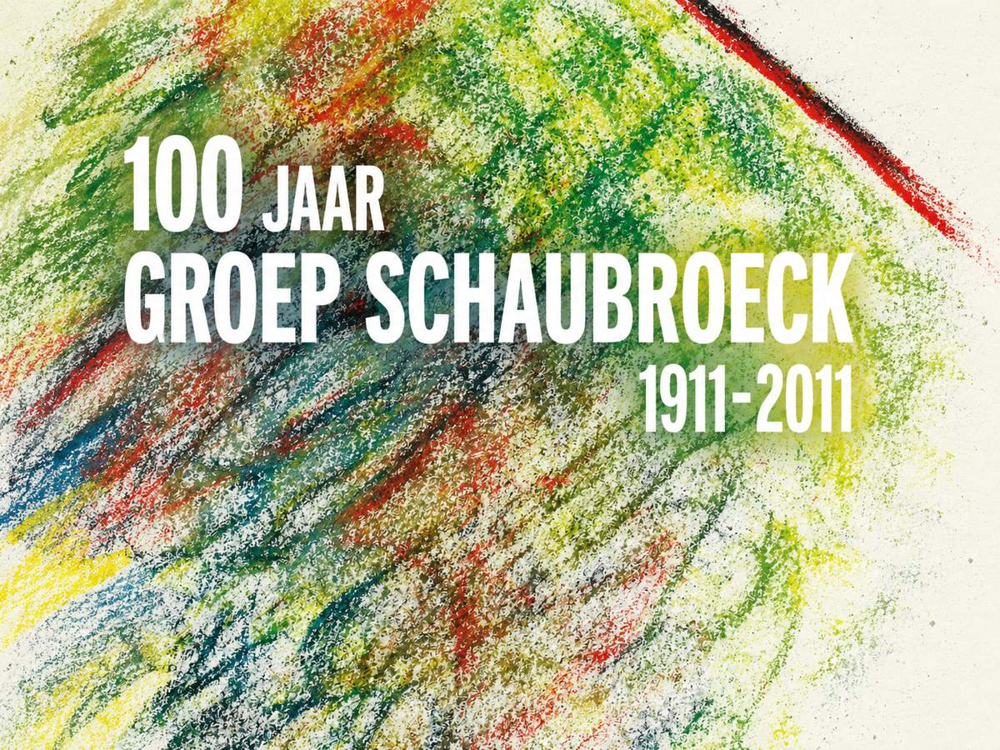
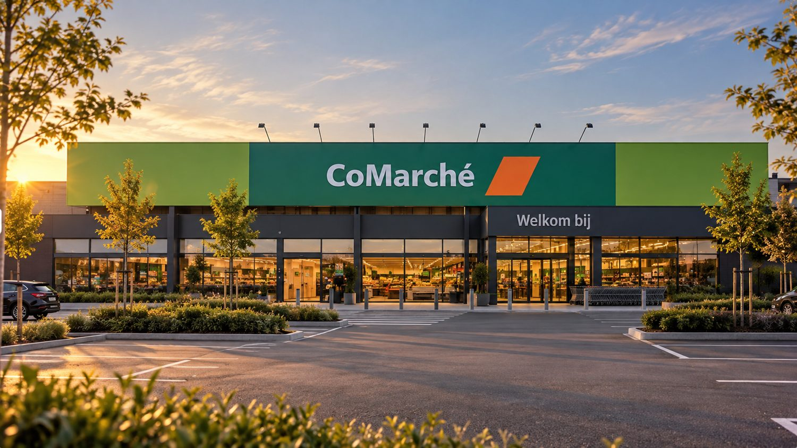

Our heritage — since 1911
From printing
to real estate.
A story of generations, entrepreneurship and vision.
Our story does not begin in real estate, but more than a century ago, in the world of printing.
1911 · Nazareth
Then and now.
In 1911 Gabriël Schaubroeck founded the Schaubroeck printing house in Nazareth. What began as a printer for local authorities grew over the generations into an established name in the Belgian business landscape. A family business built on craftsmanship, enterprise and long-term thinking.

 ThenNow
ThenNowThen · The early workshop
Drag to compare
Now · Mood image
Since
Years of entrepreneurship
East Flanders · Belgium
That history lives on today
in a new generation.
Through his mother, Isabelle Schaubroeck, founder Clément Gryp is closely connected to this family entrepreneurial past. The sector changed, but the ambition to build something of value remained.
Where earlier generations left their mark on paper, the next generation turns to the built environment.
Timeline
More than a hundred years
of entrepreneurship.
1911
The origins
Gabriël Schaubroeck founds his printing house in Nazareth, printing for special occasions.

Later
Printing for local authorities
After a few years the printing house also supplies administrative print work to municipalities and local authorities. For a long time it remains a printer for public administration.

20th century
Generations of entrepreneurship
Over the generations the printing house grows into an established, versatile graphic company.

2011
A hundred years
The group celebrates a hundred years of entrepreneurship.

2019
Black Oak Capital BV
Clément Gryp founds Black Oak Capital BV, his own independent company in real estate development and investment.

2022
Black Oak BV
A separate family holding company, distinct from Black Oak Capital BV.
Archive
Images from the printing house.
Click a photo to enlarge it.

A chapter of his own
With Black Oak Capital, Clément writes his own chapter. As an independent real estate developer and investor, the focus lies on residential developments and commercial real estate, with attention to quality, considered investments and lasting value creation.
The family connection to real estate also continues through Black Oak BV, a separate holding company in which family members invest together.
And so a business history that began more than a hundred years ago takes on a new meaning.
Different times.
Different sectors.
The same entrepreneurial spirit.
Archive photos: Schaubroeck family. The ‘Now’ image and the other images are mood references.